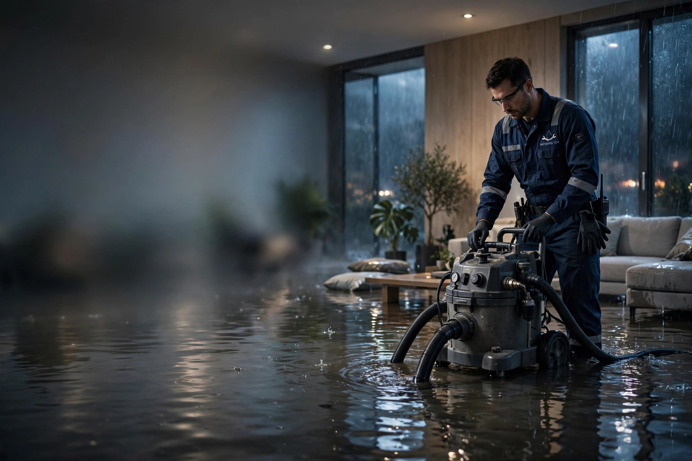
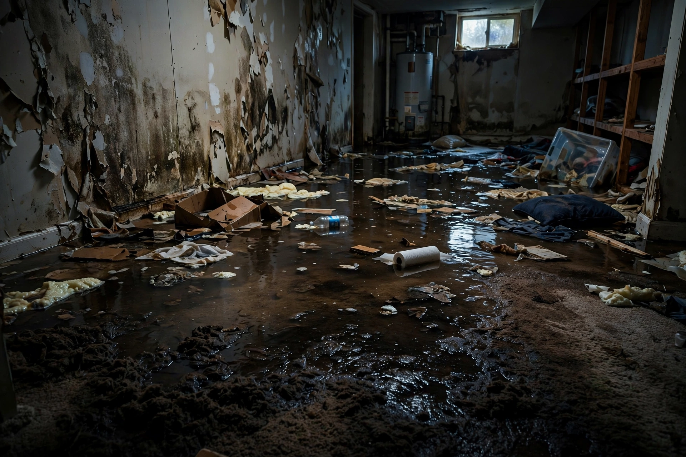
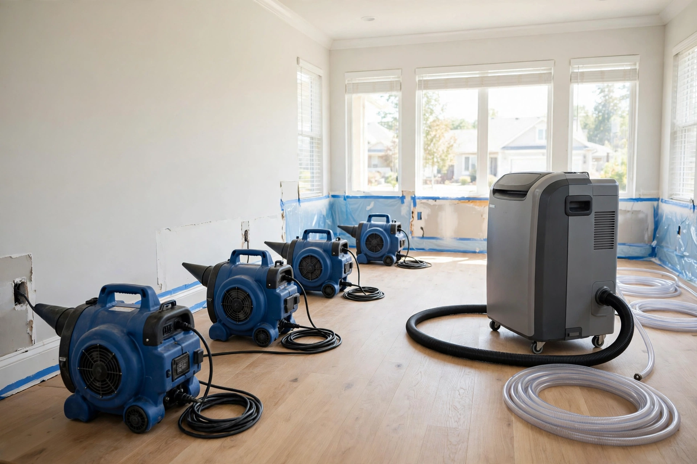

Emergency Water Extraction
High-powered pumps and truck-mounted extractors remove standing water from basements, living areas and crawl spaces — the critical first step in any flood cleanup.
Get help now →
Flooded basement, burst pipe or leaking roof? One call connects you with trusted local water damage restoration experts — fast water extraction, structural drying and mold prevention.
Free consultation • No obligation • Local certified professionals

Standing water soaks into drywall, flooring and framing within minutes. Within 24 to 48 hours, mold can take hold — turning a manageable cleanup into a costly rebuild.
From emergency water removal to full structural drying, local professionals handle every type of residential water damage.
High-powered pumps and truck-mounted extractors remove standing water from basements, living areas and crawl spaces — the critical first step in any flood cleanup.
Get help now →Commercial air movers and industrial dehumidifiers dry walls, floors and framing completely. Moisture meters verify everything is dry — no hidden dampness left behind.
Get help now →Storm flooding, overflowing appliances or rising groundwater — crews remove debris, extract water, sanitize affected areas and get your home livable again.
Get help now →Frozen or burst pipes can release hundreds of gallons overnight. Rapid response teams stop the source, extract the water and dry the structure before damage spreads.
Get help now →Mold starts within 48 hours of water exposure. Certified specialists contain, remove and treat mold growth — and dry your home properly to stop it coming back.
Get help now →Sewage backups are a serious health hazard. Professionals safely remove contaminated water, dispose of waste properly and fully disinfect your home.
Get help now →No forms, no waiting rooms — just one call to reach a local water damage expert.
Describe your water emergency to a friendly specialist. Calls are free and there's no obligation.
We connect you with an experienced, licensed and insured restoration professional serving your area.
Your local pro arrives, assesses the damage and starts water extraction and drying — often the same day.*
Searching for "water damage restoration near me" at 2 AM is stressful. Stop Flood USA does the vetting for you — connecting you with qualified local professionals so you can focus on your home and family.

Towels and household fans can't reach moisture trapped inside walls and subfloors. Local professionals use the same commercial equipment trusted by insurance companies nationwide:
Our free service connects you with local water damage restoration professionals in metro areas nationwide, including:
Don't see your city? Call (888) 217-3489 — we serve homeowners across the United States.
Real situations homeowners face — and how fast, professional help made the difference.
"Our basement flooded at 2 AM during a storm. One call and a local crew was at our door the same morning. They extracted the water and had dryers running within hours."
Sarah M.Houston, TX — Flood Cleanup"A burst pipe soaked our kitchen while we were away. The restoration team found moisture we never would have seen and dried everything properly. Highly professional."
James R.Atlanta, GA — Burst Pipe"I was worried about mold after our water heater leaked. They handled the drying, treated the area, and walked me through the insurance paperwork. Huge relief."
Denise K.Phoenix, AZ — Leak & Mold PreventionAnswers to the questions homeowners ask us most.
If it is safe, shut off the water source and turn off electricity in the affected area. Move valuables to dry ground, then call a water damage restoration professional immediately. Fast action in the first hours prevents mold growth and structural damage.
Our 24/7 emergency line connects you with local professionals offering same-day service in most areas. Response times depend on provider participation, location, technician availability and demand.
Cost depends on the size of the affected area, the category of water and how long materials stayed wet. Call (888) 217-3489 for a free consultation and an on-site assessment from a local professional.
Many policies cover sudden and accidental water damage, such as burst pipes. Gradual leaks or floodwater may need separate coverage. Document the damage with photos and ask the restoration professional about insurance documentation for your claim.
Most homes dry within 3 to 5 days using commercial air movers and dehumidifiers, though severe damage can take longer. Professionals use moisture meters to confirm materials are fully dry before finishing the job.
Yes. Mold can begin growing within 24 to 48 hours on wet drywall, wood and carpet. Professional water extraction, rapid drying and antimicrobial treatment are the best defense against mold after flooding or leaks.
Yes. Local professionals provide sewage backup cleanup with full sanitization, safe waste removal and disinfection to protect your family's health. Sewage water should never be handled without proper protective equipment.
Stop Flood USA is a free service connecting homeowners with local water damage restoration providers across the United States. Call (888) 217-3489 to check availability in your area.
Practical, expert advice for dealing with flooding, leaks, insurance claims and mold prevention.
7 immediate steps to limit damage, stay safe, and protect your insurance claim — starting in the first hour.
Read the guide →What drives the price, typical cost ranges, how insurance factors in — and the cheapest strategy of all.
Read the guide →What's covered, what's excluded (floods, gradual leaks), and how to maximize your claim payout.
Read the guide →Mold starts in 24–48 hours. 8 proven steps to stop it before it starts — and when to call a pro.
Read the guide →Hurricane flooding, bayou overflow and Houston's mold-friendly humidity — local service guide.
Houston guide →Storm surge, extreme rainfall and AC leaks — how Miami homeowners get fast restoration help.
Miami guide →Call now for a free consultation and get connected with a trusted local restoration expert — day or night.
Call (888) 217-3489Open Monday – Sunday • 10:00 AM – 2:00 AM EST • Free consultation